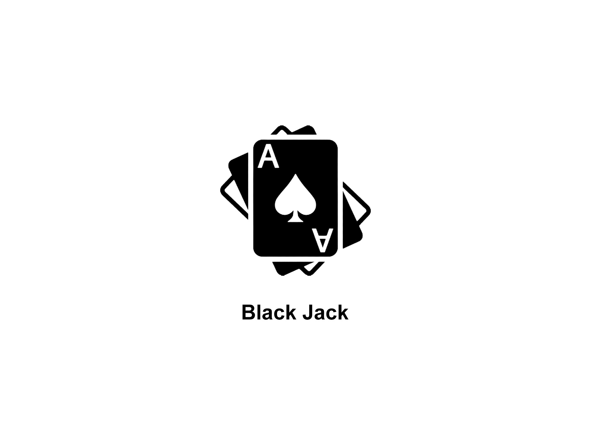
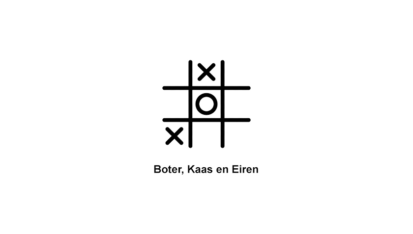

De Blije Dobbelsteen
Home
Spelregels
High Scores
Geschiedenis
Contact


Black Jack
Black Jack is een kaartspel waarbij je een 21 moet hebben om te winnen van de dealer.
Boter, Kaas en Eiren
Boter, Kaas en Eiren is een spel waarbij je als eerst drie naast elkaar moet krijgen om te winnen van je tegenstander.